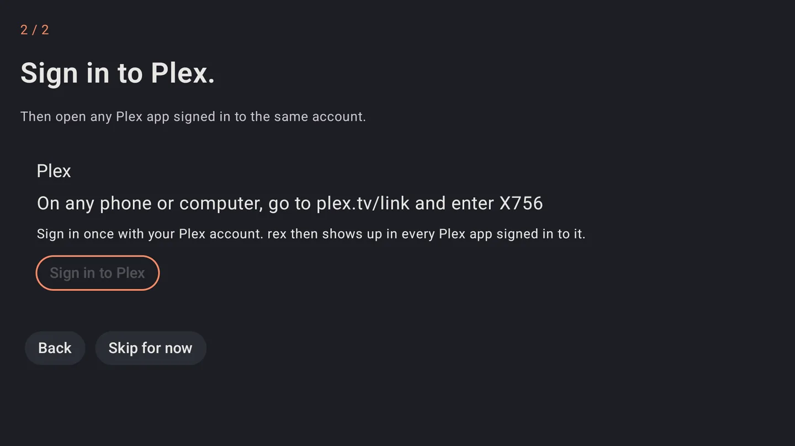

rex pour Android
rex est un serveur média pour les applications Plex qui ne possède aucun fichier. rex pour Android le fait tourner sur un téléphone, une tablette, Android TV, Google TV ou Fire TV, sans ordinateur. Les applications Plex de vos appareils le trouvent comme n'importe quel serveur Plex et lisent depuis lui.
Ce qu'il lit provient d'addons. Il commence avec les films du domaine public de l'Internet Archive. D'autres addons, comme vos addons Stremio, YouTube et Spotify, s'installent depuis l'application une fois que vous ajoutez leur dépôt.
rex pour Android est gratuit. Vous voulez aussi y intégrer vos comptes debrid et Usenet ? zurg+rex, un serveur Plex sur votre téléphone avec zurg intégré, est proposé avec un système de parrainage : voir zurg+rex pour Android.
Avant de commencer
Étape 1. Installer l'application
Les méthodes ne se mélangent pas. Google Play, l'Amazon Appstore et le fichier depuis GitHub (que Obtainium et Downloader installent aussi) sont signés différemment, donc l'une ne peut pas mettre à jour l'autre. Pour changer de méthode, désinstallez rex et refaites les étapes 2 et 3.
Elles démarrent avec des addons différents. Le fichier depuis GitHub démarre avec le dépôt rex-addons déjà ajouté. Les versions des stores démarrent uniquement avec l'addon Internet Archive ; ajoutez rex-addons vous-même (voir
Avec Obtainium
Obtainium installe des applications depuis GitHub et les garde à jour.
- Installe Obtainium.
- Sur le même appareil, ouvre rex.debridmediamanager.com/obtainium. Obtainium s'ouvre et te propose Import app. Appuie sur Continue.
- Appuie sur rex, puis sur Install. Obtainium choisit le fichier adapté au processeur de ton appareil.
- La première fois, Android indique qu'Obtainium n'est pas autorisé à installer des applications. Active Allow from this source puis reviens en arrière.
- Appuie sur Install. Si Play Protect affiche App scan recommended, appuie sur Scan app, puis sur Install.
Quand une nouvelle version sort, Obtainium affiche Update à côté de rex.
Avec Downloader sur Fire TV
- Sur le Fire TV, installe Downloader de AFTVnews depuis l'Appstore.
- Ouvre-le, sélectionne la zone d'adresse et tape
rex.debridmediamanager.com/tv. Appuie sur Next. Il téléchargerex-android-armeabi-v7a.apk. - Appuie sur Install. La première fois, le Fire TV ouvre Developer options à la place. Sélectionne Install unknown apps, puis Downloader pour qu'il affiche ON. Appuie deux fois sur Back et appuie à nouveau sur Install.
- Appuie sur Install, puis sur Open.
Pour mettre à jour, refais les étapes 2 à 4. Un code Downloader court est en préparation.
Le fichier depuis GitHub
Sur l'appareil, téléchargez le fichier correspondant à son processeur. Chaque lien pointe toujours vers la dernière version :
Toutes les versions et leurs modifications sont sur la page des versions. Vous ne savez pas ? Essayez d'abord arm64-v8a. Un seul fichier fonctionne sur les téléphones comme sur les TV.
Ouvrez le fichier téléchargé. Android indique qu'il n'est pas autorisé à installer des applications inconnues depuis cette source. Appuyez sur Settings, activez Allow from this source, revenez en arrière et appuyez sur Install.
Pour mettre à jour, installez le nouveau fichier par-dessus l'ancien. rex redémarre tout seul et votre connexion ainsi que vos addons restent en place.
Ce que vous devriez voir. rex dans votre liste d'applications.
Étape 2. Lancer rex
Ouvrez rex. Le premier écran affiche Welcome to rex.
- Appuyez sur Allow notifications, puis sur Allow. rex fonctionne en arrière-plan avec une notification qui permet de l'arrêter.
- Appuyez sur Let rex keep running in the background. Dans la liste qui s'ouvre, choisissez rex puis Don't optimize. Sur les versions récentes d'Android, il s'agit de Allow background usage, puis Unrestricted. Revenez dans rex. Les deux boutons commencent maintenant par un ✓.
- Name est le nom que les applications Plex affichent pour ce serveur. Modifiez-le si vous le souhaitez.
- Laissez Port sur
32400. Si un autre serveur Plex tourne déjà sur cet appareil, rex affiche Another app here already uses this port, maybe a Plex server. Try 32500. Saisissez32500. - Appuyez sur Start rex.
Ce que vous devez voir. 2 / 2 et Sign in to Plex.
Étape 3. Se connecter à Plex
Appuyez sur Sign in to Plex. rex affiche un code : On any phone or computer, go to plex.tv/link and enter it.
- Sur un téléphone ou une tablette, votre navigateur ouvre aussi une page Plex indiquant rex for Android would like to sign in to your Plex account. Connectez-vous là.
- Sur une TV, allez sur plex.tv/link depuis votre téléphone ou votre ordinateur, connectez-vous et saisissez le code.
Utilisez le compte avec lequel vos applications Plex sont connectées. Vous pouvez appuyer sur Skip for now et vous connecter plus tard depuis Status.

Ce que vous devriez voir. Signed in. rex shows up in the Plex apps as suivi du nom de votre serveur. Appuyez sur Done. Status affiche RUNNING et Ready for the Plex apps.
Étape 4. Regarder dans une application Plex
Ouvrez n'importe quelle application Plex connectée au même compte. Si Plex est sur cet appareil, Status affiche un bouton Open Plex.
Dans Plex pour Android, ouvrez Libraries, puis All Libraries, puis Movies sous le nom de votre serveur. Les autres applications Plex affichent aussi la bibliothèque sous le nom du serveur.
La première synchronisation d'Internet Archive prend un moment : environ une demi-heure sur notre appareil de test, le temps que rex vérifie chaque film. Status affiche Syncing jusqu'à la fin, puis le nombre, comme Ready · 97 titles. Lancez la lecture de n'importe quel film.
Modules complémentaires
Addons liste ce que vous avez installé. Chacun affiche ses titres et la date de sa dernière synchronisation. Ses boutons sont Sync now, Settings, Log et Remove ; sur téléphone, faites glisser la rangée de boutons vers la gauche ou la droite pour tous les voir. L'interrupteur Enabled désactive un addon sans le supprimer.
Les addons viennent de repositories : des dépôts git qui contiennent des addons. L'addon Internet Archive est déjà installé. Pour en avoir davantage, ajoutez rex-community-addons (voir Add a repository plus bas), qui propose :
Installer un addon. Sous Repositories, appuyez sur Addons à côté d'un repository, puis sur Install sous l'addon. rex affiche les sites web auxquels il peut accéder et vous demande une dernière fois confirmation, puis lance la synchronisation.
Se connecter. Un addon qui a besoin de votre compte affiche Sign in to start. Appuyez sur son bouton Sign in : rendez-vous sur la page indiquée sur n'importe quel appareil et saisissez le code affiché.
Ajouter un repository. Sous Add a repository, tapez son lien (github.com/user/repo suffit) et appuyez sur Add. N'installez que des addons de personnes en qui vous avez confiance. Pour écrire votre propre addon, consultez rex-addons.
Regardez sur d'autres appareils à la maison
Chaque application Plex connectée au même compte trouve rex sur votre réseau domestique grâce à son nom : votre téléviseur, un autre téléphone, Plex Web sur un ordinateur. Status affiche l'adresse de rex à la maison, comme http://192.168.1.20:32400.
Pour permettre à votre famille de regarder avec son propre compte Plex, consultez Partager rex avec la famille et les amis.
Gardez-le en marche
- rex tourne tant que l'appareil est allumé. La notification Stop l'arrête ; Status propose Start, Stop et Restart.
- Dans Settings, activez Start when this device turns on. Sinon, ouvrez rex et appuyez sur Start après un redémarrage.
- Certains téléphones arrêtent encore les applis en arrière-plan. Don't kill my app explique ce dont la vôtre a besoin.
- Pour renommer le serveur, ouvrez Settings, General dans une appli Plex et modifiez Friendly name.
Limites
- Ça marche à la maison. En dehors de chez vous, les applis Plex ont besoin d'une adresse HTTPS qui atteint l'appareil, ce qui demande une redirection de port sur votre routeur vers celui-ci. Voir Utiliser depuis l'extérieur de chez vous.
- L'appareil est le serveur. Gardez-le allumé, en Wi-Fi ou en Ethernet, et branché. Convertir une vidéo pour un lecteur qui ne sait pas la lire utilise le matériel de l'appareil lui-même, et ça peut être lent sur un petit boîtier bon marché.
- Uniquement ce que fournissent les addons. Il n'y a pas de bibliothèque de fichiers sur l'appareil lui-même.
Dépannage
Logs affiche ce que rex et les addons ont dit récemment, les clés et mots de passe étant masqués. Si le support demande les logs, appuyez sur Send logs to support : vous voyez tout avant l'envoi, puis appuyez sur Send et publiez le code obtenu.
Ce que l'app envoie et où, est expliqué dans sa politique de confidentialité.
Bloqué ? Posez votre question dans le forum rex-support sur Discord.